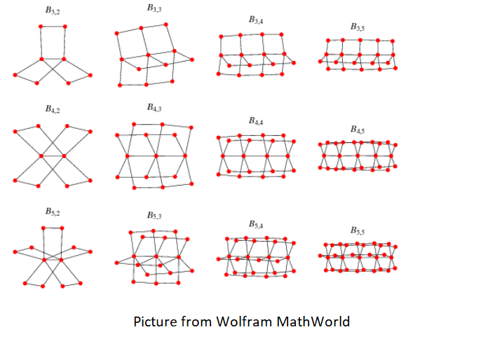

Book Hall of Fame
I read a lot of books. Here are several of my favorites of all time organized into broad categories. books worth reading>.

Productivity/Self-Improvement
- Deep Work
- Getting Things Done
- Four Thousand Weeks
Non-Fiction: Historical/Bibliographic
- The Rise of Theodore Roosevelt
- Means of Ascent
Non-Fiction: Memoir
- I Can't Make This Up
- I'm Glad my Mom Died
- Under and Alone
- Educated
Non-Fiction: Informative
- In Defense of Food
- Science Fictions
- How to be Perfect
- Bottle of Lies
- Just Mercy
Fiction
- Project Hail Mary
- The 7 1/2 Deaths of Evelyn Hardcastle
- Beneath a Scarlet Sky
- The Way of Kings
- A Long Way Down
Books by Year
Here are some of my favorite books that I read each year arranged in roughly chronological order.
2026
- All the Broken Places
- Maybe in Another Life
- Divergent
- Voices from the Pandemic
- Peak (Ericsson and Pool)
- Artemis
- One True Loves
- Everyone on This Train is a Suspect
- Apples Never Fall
2025
Total Read: 42 New + 2 Rereads
- The Martian Chronicles
- The Chancellor
- This is Real Magic
- The Abstienence Teacher
- Lights Out (Koppel)
- The Library at Mount Char
- High Conflict
- How to Fly a Horse
- Everyone in my Family Has Killed Someone
- Non-violent Communication
- A Ladder to the Sky
2024
Total Read: 32 New + 19 Rereads
- A Hisotry of Lonliness
- The Last Murder at the End of the World
- I'm Glad my Mom Died
- Fortune Smiles
- The Simple Path to Wealth
- Oona out of Order
- Under and Alone
- X+Y
2023
Total Read: 60
- Intuitive Eating
- Factfulness
- Horse
- Built to Move
- What's Our Problem
- Outlive
- Team of Rivals
- The Peacemaker: Ronald Reagan, the Cold War, and the World on the Brink
- An Unfinished Life: John F. Kennedy
2022
Total Read: 66
- Four Thousand Weeks
- Lyndon Johnson and the American Dream
- The Rose Code
- How to be Perfect
- The Three Lives of James Madison
2021
Total Read: 105
- Open
- Rising out of Hatred
- The Anthropocene Reviewed
- Station Eleven
- Project Hail Mary
- The Four Winds
- The Heart's Invisible Furies
- Breath
- Chasing the Scream
- The Lies that Bind
- The New Jim Crow
- Unsavory Truth
- Bottle of Lies
- The Invisible Life of Addie Larue
- The Wise Man's Fear
2020
Total Read: 137
- The Magicians
- Anxious People
- Slam (Hornby)
- Morality (Sacks)
- The 7 1/2 Deaths of Evelyn Hardcastle
- Beneath a Scarlet Sky
- The Oxygen Advantage
- Big Little Lies
- The Color of Water
- 11-22-63
- Mini Habits
- The Family Fang
- A Gentleman in Moscow
- Herbert Hoover
- Indistractable
- The Word is Murder
- Genghis Khan and the Making of the Modern World
- The Power of Moments
- Talking to Strangers
- The Phantom Tollbooth
- One More Thing
- The Way of Kings
- Range
- A Long Way Down
2019
Total Read: 137
- Means of Ascent (and every other book in this series)
- Political Tribes
- Educated
- Can't Hurt Me
- Sufficiently Advanced Magic
- The Name of the Wind
- I Can't Make This Up (I particularly recommend the audiobook read by Kevin Hart himself)
There are likely other books I read this year which were excellent, but I only thought to start recording near the end of the year.